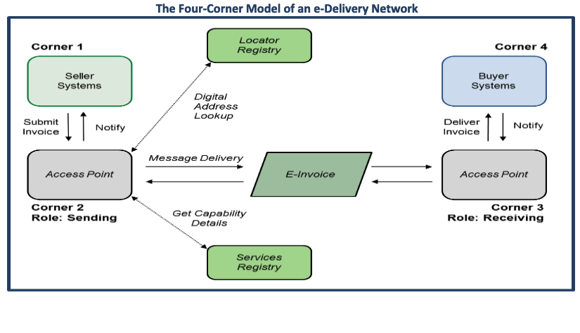
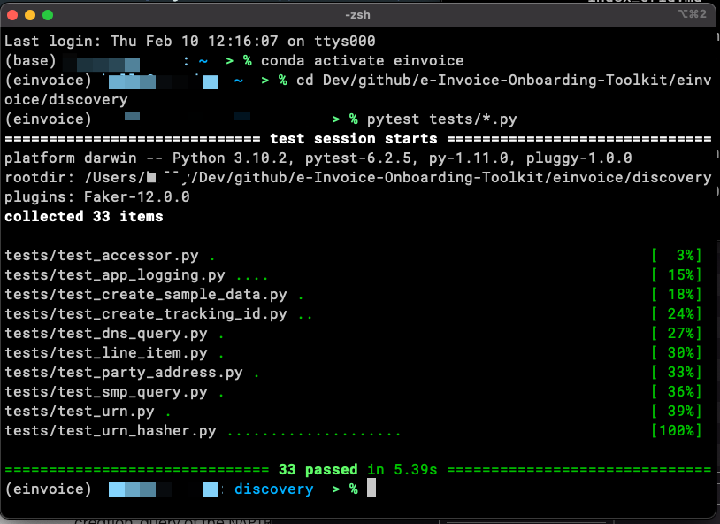
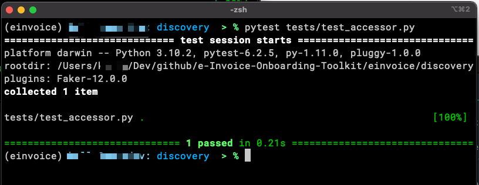
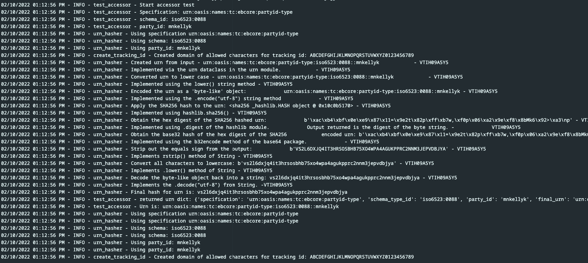

E-Invoice Onboarding Toolkit
| Repository | https://github.com/BPC-Exchange-Framework/E-Invoice-Onboarding-Toolkit |
| Copyright | Copyright © 2022 - BPC Exchange Framework Open Source Tools Project |
Project Home
Welcome
Welcome to the E-Invoice Onboarding Toolkit
This is a repository for open source software tools created to facilitate market adoption of e-invoices implemented conformant with the Four-Corner Model of an Exchange Framework.
Project Goals
GOALS: The features of the project as outlined in the project roadmap.
| Roadmap Feature | Feature Phase | Purpose of Feature |
|---|---|---|
| Feature #1 - SML NAPTR DNS Lookup | Discovery | 1. Create an ID code based on the Buyer's party ID 2. Look up the ID code up in a global internet database to get the address of a website which has more information about the Buyer. |
| Feature #2 - SMP REST API Query | Discovery | 3. Contact the website from the previous step to make sure the Buyer can in fact handle receiving an e-invoice and where to send it. |
| Feature #3 - AS4 Message header format validation. | Delivery | 4. Validate that an e-mail message sent to the Buyer is in the correct format. |
Project Outcomes
OUTCOMES: How the features are implemented.
| Outcome | Feature | Phase |
|---|---|---|
| 1. Hashing functionality to derive the URN for look-up in a DNS NAPTR record. | Feature #1 | Discovery |
| 2. Execute DNS NATPR lookup and extract the relevant SMP URI. | Feature #1 | Discovery |
| 3. Two REST requests to an SMP server using a REST API to retrieve a Corner 3 URI. | Feature #1 | Discovery |
| 4. Execute the web service requests to the SMP server. | Feature #2 | Discovery |
| 5. Extract the Corner 3 endpoint URI from the response from the SMP server. | Feature #2 | Discovery |
| 6. Validate an E-Invoice ebMS message header for compliance with an AS4 conformance profile. | Feature #3 | Delivery |
For information about E-Invoices and the Four-Corner Model please visit the Business Payments Coalition website.
Additional documentation, reference materials, and standards can be found on the Oasis-Open.org website. Start with the ebXML specification
Site Map
FAQ
- Q:
- Who is the audience for this project?
- A:
- This software is intended for those interested in participating as service endpoints in a Four-Corner Model framework. The code to implement in the repository is written in the Python programing language. Other toolsets to facilitate the initiative such as Markdown or Docker may also be incorporated where appropriate.
- Q:
- What do I need in order to use this code?
- A:
- Python
1. Intermediate knowledge of Python.
2. Python 3.6 or greater, Python 3.10 or greater is recommended..
- Q:
- Does this code provide a full end-to-end solution to process an e-invoice?
- A:
- This code answers some very domain specific questions regarding e-invoice discovery and delivery using a Four-Corners exchange framework.
Specifically it's helpful with:
Discovery
1. The hashing functionality to derive the URN for look-up in a DNS NAPTR record.
2. How to do the DNS NATPR lookup and extract the relevant SMP URI.
3. How to construct the two REST requests to an SMP server to retrieve a Corner 3 URI.
4. How to execute the REST requests to the SMP server.
5. How to extract the Corner 3 endpoint URI from the response from the SMP server.
Delivery
1. Validating an e-invoice ebXML message header for compliance with an AS4 conformance profile.
- Q:
-
How do I use the code?
- A:
- Here are some ways the code can be examined or worked with:
1. Discovery Valdiation of the URI discovery process..
2. Test Cases which demonstrate functionality of the modules.
3. Jupyter Notebook sandbox environments at Google Colab Pages which isolate and demonstrate the code in a sandbox.
4. Package/Library API see the Index for links to the code API on the modules themselves.
Project Outcomes:
Functionality
- Discovery
a. Hashing functionality to derive the URN for look-up in a DNS NAPTR record.
b. DNS NATPR lookup and extract the relevant SMP URI.
c. Two REST requests to an SMP server to retrieve a Corner 3 URI.
d. Execute the REST requests to the SMP server.
e. Extract the Corner 3 endpoint URI from the response from the SMP server. - Delivery
a. Validate an e-invoice ebXML message header for compliance with an AS4 conformance profile.
About the E-Invoice Onboarding Toolkit
About
This project offers examples of Python code written to interact with an access point or discovery service of a Four-Corner Model.
Please see the Business Payments Coalition website for more information and an overview of the Model.
Assumptions
The Four-Corner Model
The software included with the project assumes a baseline understanding of the Four-Corner Model and its constituent components.

Python
The primary programming language chosen for the project is Python. To implement and run the code in this project requires a working knowledge of Python. This wiki and additional documentation are intended to further outline how the software is designed to implement the Four-Corner Model.
Tools and Resources
GOAL: Create, test, deploy, and maintain code to the highest professional standards.
HOW: Tools and best practices which facilitate development of high quality code with testable and reproducible outcomes.
Quick Guide
| Tool | Minimal requirements |
|---|---|
| Programming Language | Python 3.6 or above. |
| Computer | Supports running Python 3.6 or above. |
| OS | Mac, Windows, or Windows w/WSL2. |
| Documents and resources. | GitHub and BPC-Technical-Workgroup-Folder - Google Drive |
Programming Languages
The primary programming language for the project is Python. Knowledge of other enabling technologies, specifically shell scripting (e.g., ZSH, BASH, or PowerShell) and CommonMark or GitHub Flavored Markdown may be helpful.
All effort will be made to remain within the Python Standard Library. Other publicly hosted packages with an open source license may be implemented.
Version of Python
Select a minimum version of Python 3.6. This will include newer features such as f-string. Python 3.10 is recommended.
Operating System
| OS | Considerations |
|---|---|
| Mac OS | Included system version of Python 2.x must be respected. Make sure to use Python virtual environments. |
| Windows | Latest version of Python are now available on the Windows Store. Anaconda3 is an especially good option in this OS. |
| Windows w/WSL2 | WSL2 allows implementation of native Ubuntu on Windows for a linux based Python install while using Windows tools. Integration of virtual environments and Python executable with an IDE like VS Code can be finicky. |
| Linux | Native support for distributed technologies, i.e., Kubernetes and Docker. |
| Chrome OS | Limited on-device resources but a growing number of online and cloud development options, e.g., AWS, Azure, OpenShift, JupyterLab and Notebooks. |
| Raspberry PI | With native Python support, Linux packages, and cloud options there is no reason dev is not an option. |
Additional Configuration and Environment Considerations
Future looking consideration for implementation of additional Python enabling technology in support of scalability, portability, and resiliency includes:
Frameworks:
- Django
- Flask
- FastAPI
- OpenAPI
Containerization and Cloud Services:
- Docker
Cloud services such as:
- Amazon Web Services (AWS) including lambdas and Route53 DNS
- Microsoft Azure
- RedHat OpenShift
Additional infrastructure components may be implemented by the Project for testing or prototyping utilization of cloud services.
Local testing of Docker containerization may be done on a desktop. Choice of a cloud infrastructure provider to host and mange Docker containers is at the discretion of the application implementer.
Python Programming Methodologies, Standards, and Tools:
Python Coding Standards:
- PEP20 - The Zen of Python
- PEP8 - The Style Guide for Python Code
- Guiding Design Principles from the Scientific Python Cookiecutter.
- Python Doc the official Python web site page of references to more documentation.
- See the list of books below for additional guidance on standards and best practices in Python development.
Tools in bold are used to validate code against PEP8 and PEP20 standards and must complete successfully in order to do a pull into GitHub, bold) .
- flake8
- autopep8
- pylint
- pytest
- unittest
- bandit
- mypy
- pycodestyle
- pydocstyle
Development methodologies
- Documentation and use of docstrings
- PEP257
- [Google/numpy style docstings as documented in the Google Python Style Guide. This document is also provides additional best practices for professional Python devleopers.
- Domain Driven Design. See the list of books below for original and supplemental sources material by Eric Evans and Vaughn Vernon.
- Test Driven Development. See the list of books below for original source material by Harry J.W. Percival.
- Agile principles applied appropriate to the the size and state of the project.
Books
There are many great reference materials in print and on the Internet about Python development.
Below are references that may be helpful.
- The Hitchhiker's Guide to Python by Kenneth Reitz and Tanya Schlusser. Online for free at docs.python-guide.org.
- Serious Python by Julien Danjou
- Domain-Driven Design Distilled by Vaughn Vernon
- Domain Driven Design: Tackling Complexity in the Heart of Software by Eric Evans
- Test Driven Development with Python: Obey the Testing Goat, etc. by Harry J.W. Percival. Also available online for free.
- Architecture Patterns with Python by Harry J.W. Percival and Bob Gregory
- Pro Git by Scott Chacon and Ben Straub. Available as a free download under an open source license.
Configure a Python Dev Environment
Respecting individual preferences and work style these are some suggested guidelines for creation of a Python development environment. These are consistent with Python standards and best practices and appropriate as a starting point for professional software development in Python.
Installing Python
The correct method of installing Python varies depending on the OS. Here are some considerations based on popular OS.
| OS | Considerations |
|---|---|
| MacOS | Mac OS comes configured with Python 2.x. This version of Python is required by the OS and removal will impair system function. Homebrew is a package installer for Mac. Using Homebrew to install Python versions prior to 3.7 may generate errors on instal due to deprecated libraries. That isues has been resolved for versions 3.7 and higher.Apple XCode Developer Tools installs Git and a version of Python. Available through the App Store it is a large download and system intensive program which may not run smoothly on older or less robust systmes. A more granular installation would be the XCode Command Line Tools which installs Git combined with a Python install pulled directly from Python.org. |
| WindowsOS | Python is now available on the Windows Store, though updates may lag behind current Python releases at python.org before arriving on the Windows Store. The option to set environment variables via a UI on a per user basis facilitates multiple installed versions simultaneously. VS Code from Miscrosoft integrates direcltly with a system installled version of Python. |
| Windows WLS2 | A fully native Python install on Ubuntu is available for Windows Subsystem for Linux 2. The version of Python may need to be updated from a secondary repository as the official Ubuntu version trails official Python releases. Integration between VS Code running on Windows and integration with WSL2 Python may require custom configuration. |
| Linux | A variety of package managers based on the installed distro enable installation and updates through a GUI or command line. |
Python3
Python is officially referred to and invoked by specfiying either Python 2.x as "Python2" or Python 3.x.x as "Python3." The difference is generally trivial except on Macs where Python2 is included as part of the OS install.
On Mac and Linux based systems, adding an alias to .bashrc or .zshrc is an easy way to prevent inadvertent references to an incorrect version of Python, e.g.,
alias python='python3'
alias pip='pip3'
Create a virtual environment to use for Dev
A Python virtual environment is a development sandbox which allows for segmentation of development environments. This allows for management of different combinations and versions of Python releases, deployed packages, development and testing environments, and shifting between entirely different development projects. See the Python documentation for venv for a more detailed explanation and rationalization of Python virtual environments.
The use of Python virtual environments can't be overstated as a best practice to organize Python versions and package management. PEP-405
Creating virtual environments to use in Python programming can be done entirely with packages that are include in the Python install or by additional third party applications.
The choice of tools to create and manage Python virtual environments is dependent on situation, preference, and use case.
| Tool/App | Use Case |
|---|---|
| venv | Implementation of the virtualenv as a Python module included in the Python install since v.3.3. This tool does not require installation outside of the Python distribution itself. |
| virtualenv | Includes features not included in venv (see the comparison). |
| Anaconda | A heavyweight package and virtual environment manager. It acts as an "all in one" for Python application versions, package management, virtual environments, additional programming languages such as R and Julia and tools such as visualizers and IDEs. The full fledged install can overtax some systems and performance can suffer from an overly ambitious installation configuration. A personal license for individuals is free for non-commercial use. Use by for-profit or governmental organizations with more than 200 people requires licensing. |
| miniconda | A slimmed down version of Anaconda focused on virtual environment and package management, includes only conda and Python, not open source, but free. |
| conda | The open source package manager utilized by Anaconda and miniconda. |
| pip | Included in Python 3.4 and later, this tool does not manage the virtual environment but does handle package management for both venv and virtualenv. Not all python tools have been integrated into the Anaconda repositories or packages for install. Some, such as mkdocs, must still be installed via pip even when using Anaconda3 or miniconda. |
'virtualenv venv' vs. 'venv virtualenv'
Avoid the confusion of the typical example given in the documentation of virtualenv which uses the command executed as "virtualenv venv." This calls virtualenv to create a virtual environment named venv.
Compare with "venv virtualenv" which calls venv to create a virtual environment called virtualenv. For most practical purposes when using Python 3.6 or greater it doesn't matter whether venv or virtualenv is used to create the virtual instance.
It's recommended to name a virutal environment with a single word unique identifier as the word will be prefixed to the terminal command line when the virtual environment is activated.
Other Python Tools
Other tools such as virtualenvwrapper, pipenv, pew, tox and nox, poetry, and black may be useful but are not currently utilized in this project. Pyenv was deprecated in Python 3.5 and not utilized.
Project Package Requirements
Currently implemented packages:
This project utilizes the following packages, all of which should be available under an Open Source license via PyPI.
List updated as of:
12/18/2022 (December 18th, 2022)
Make sure to source the virtual environment first and then 'pip install <package>' or 'conda install <package>' to bring in the package.
anyio
appnope
argon2-cffi
argon2-cffi-bindings
arrow
asttokens
attrs
Babel
backcall
beautifulsoup4
bleach
certifi
cffi
charset-normalizer
click
debugpy
decorator
defusedxml
distlib
dnspython
elementpath
entrypoints
executing
fastjsonschema
filelock
fqdn
ghp-import
idna
iniconfig
ipykernel
ipython
ipython-genutils
ipywidgets
isoduration
jedi
Jinja2
json5
jsonpointer
jsonschema
Markdown
MarkupSafe
matplotlib-inline
mergedeep
mistune
mkdocs
mkdocs-autodoc
mkdocs-material
mkdocs-material-extensions
mkdocs-print-site-plugin
nbclassic
nbclient
nbconvert
nbformat
nest-asyncio
notebook
notebook_shim
packaging
pandocfilters
parso
pexpect
pickleshare
platformdirs
pluggy
prometheus-client
prompt-toolkit
psutil
ptyprocess
pure-eval
py
pycparser
Pygments
pymdown-extensions
pyparsing
pyrsistent
pytest
pytest-html
pytest-metadata
python-dateutil
python-json-logger
pytz
PyYAML
pyyaml_env_tag
pyzmq
qtconsole
QtPy
requests
rfc3339-validator
rfc3986-validator
Send2Trash
six
sniffio
soupsieve
stack-data
terminado
tinycss2
tomli
tornado
traitlets
typing_extensions
uri-template
urllib3
virtualenv
watchdog
wcwidth
webcolors
webencodings
websocket-client
widgetsnbextension
xmlschema
xmltodict
Getting the code.
Pulling the code from GitHub
The E-Invoice-Onboarding-Toolkit is a public repository. The code is freely available under an MIT License for individuals and organizations to pull, review, and modify as they chose in order to further their participation with the project.
It is entirely possible to pull the code from GitHub anonymously using a link from within the repo.
Pulling the code from GitHub
-
Look for the green "Code" button which will provide links to clone the code using https, ssh, the git desktop, or a zip file.
-
This is going to pull the repo at the root ./e-invoice-Onboarding-Toolkit level so this directory must not already exist when pulled down or it will overwrite the contents of the pre-existing directlry.
-
Open the folder as a project within your IDE or editor of choice.
Those who would like to become more involved and want to do more than anonymously pull code can contribute by:
-
Creating a GitHub account if one hasn't already been created.
-
Installing the GitHub CLI or the GitHub desktop application
-
Configuring the personal profile and Secure Shell/SSH keys to securely submit code to the repository.
-
Contributing code and creating pull requests to integrate with the repo.
Using the Code ↵
Creating the SML URN Hash
The SML look-up is a NAPTR DNS query which returns the URL of the SMP. The record queried is a URN constructed from the combined Specification, Schema, and Party ID and then hashed. After the hash is created, the URN is combined with the look-up domain. This combination of URN and domain is the record locator for the information in the DNS.
The Python code, as script, function, or method, provides elaboration and implementation of the process as described in Section 3.2 of the BPC SML Profile Version 1.0 document found on the BPC-Exchange-Framework/BPC-Market-Pilot Github site.
The BPC SML Domain
The BPC SML Domain is: bpcb2b.net
Information needed to create the URN
Three data points are required to create the URN:
- Specification (urn:oasis:names:tc:ebcore:partyid-type)
- Schema (iso6523:0060)
- PartyID
Format of Specification, Schema, and Party ID is assumed to be conformant
The standard articulated for an ebCorePartyId referenced in the Business Document Metadata Service Location Version 1.0 referring to the OASIS ebCore Party Id Type Technical Specification Version 1.0 provides normative guidelines for the values used for the Specification and Schema.
This code does not validate or enforce compliance with those standards. There is no Inspection or validation of values used for the Specification, Schema, and Party ID used to create a URN hash for look-up. Conformance for those values are assumed, however the code works on any string of data.
Example - Creating the URN hash
1. Import Modules
The hashlib and bas64 Python modules are used in this process.
import hashlib
import base64
2. Concatenate the string
Strings are a primitive data type in Python. Instantiate and initialize string variables for the individual data values and concatenate them into a single string. Simple validation of the correct format of the urn is included.
specification = "urn:oasis:names:tc:ebcore:partyid-type:unregistered:myscheme"
schema = "BPC01"
party_id = "bpcBusid01"
urn = specification + ":" + schema + "::" + party_id
urn_test_case =
"urn:oasis:names:tc:ebcore:partyid-type:unregistered:myscheme:BPC01::bpcBusid01"
print(f"urn is concatenated properly: {urn == urn_test_case}")
print(urn)
Punctuation
Note the use of a single and a double colon as separators between the values. These are includes as part of the string and are required.
3. Convert to lower-case
Implements the Python String lower() method.
lower_case_urn = urn.lower()
print(f"URN converted to lower case: {lower_case_urn}")
4. Encode as utf-8
The sha256 and base32 operations done on the string are Buffered Protocols,
which requires that they be in a
bytes-like object
format in Python. This is obtained using the String encode()
method specifying "utf-8" as the format.
The bytes(x, encoding, error) function could also be used here.
urn_encoded = lower_case_urn.encode('utf-8')
print (f"URN encoded as utf-8: {urn_encoded}")
5. Create sha256 hash
This implements the sha256() method of the hashlib module imported in Step #1.
sha256_urn = hashlib.sha256(urn_encoded)
print (f"URN hashed using sha256 {sha256_urn}")
6. Obtain the 'digest'
The digest is the concatenation of all of the data fed into the hash so far, i.e., the current value.
(Though implemented as a single operation here, the buffered protocol allows for additions and updates to the hash.) The digest() method is included in the hashlib module.
sha256_digest = sha256_urn.digest()
print(f"Digest of buffered stream containing results thus far: {sha256_digest}")
7. Encode into base32
Why encode in base32?
Encryption using sha256 results in a one-way hash. The original value of the URN is not intended to be derived from that hash as that is cryptographically impossible. (Encoding the sha256 hash into base32 is not one way.)
The sha256 hash is 256 bits, or 32 bytes. A two digit hexadecimal representation of the 32 byte hash is 64 characters long. Since base32 encoding has a character set of 32 compared to hexadecimal's 16, the sha256 hashed value can be represented in 32 characters in base32 instead of the 64 required for hex.
The irreversibility of the sha256 hash implies that the process is cryptographically significant. It is not. The hashed URN is ultimately used as a dictionary look-up in the DNS record for a given domain. Where a common specification and schema are in use by many participants, it becomes imperative that the PartyIDs are unique for a specific domain. Otherwise, while a sha256 hash can't be reversed, it can be duplicated.
The output of this process is a 256 bit/32 byte value represented in a base 32 character set.
Take the digest entry, still a bytes-like object, and encode it in base32,
resulting in a string 32 characters in length. This implements the b32encode
method of the base64 module.
b32_urn = base64.b32encode(sha256_digest)
print(f"The base32 encoded representation of the URN: {b32_urn}")
8. Strip off extras
The base32 encoding may result in extra characters at the end of the string.
The rstrip String method is used to
remove any of this additional padding at the end of the string.
b32_urn_clean = b32_urn.rstrip(b"=")
print(f"The URN with any padding removed {b32_urn_clean}")
9. Convert back to a String
The object is still in a binary or bytes-like object format.
Convert it back into a String primitive using the String decode('utf-8) method
where 'utf-8' was the original encoding method.
b32_str = b32_urn_clean.decode('utf-8')
10. Convert to lower-case
Per the specification, ensure the output is entirely in lowercase.
This implements the String lower() method again.
final = b32_str.lower()
Final Output
The final output of the hash algorithm.
print(f"The final result: {final}")
Code
The entirety of the Python code for the hash algorithm - can be run as a script or a function.
#########################################################
#
# Example Constructing a URN for SML DNS NAPTR look-up
#
##########################################################
# import the modules
import hashlib
import base64
# get the urn
specification = "urn:oasis:names:tc:ebcore:partyid-type:unregistered:myscheme"
schema = "BPC01"
party_id = "bpcBusid01"
urn = specification + ":" + schema + "::" + party_id
urn_test_case =
"urn:oasis:names:tc:ebcore:partyid-type:unregistered:myscheme:BPC01::bpcBusid01"
print(f"urn is concatenated properly: {urn == urn_test_case}")
print(urn)
# make sure it's converted to lower case
lower_case_urn = urn.lower()
print(f"URN converted to lower case {lower_case_urn}")
# has to be a byte-like object to be hashed, so encode it as utf-8
urn_encoded = lower_case_urn.encode('utf-8')
print (f"URN encoded as utf-8: {urn_encoded}")
# now create the sha256 hash of it
sha256_urn = hashlib.sha256(urn_encoded)
# get the current value of the buffer stream
sha256_digest = sha256_urn.digest()
print(f"Digest of buffered stream containing results thus far: {sha256_digest}")
#encode into b32
b32_urn = base64.b32encode(sha256_digest)
print(f"The base32 encoded representation of the URN: {b32_urn}")
# strip off the equals sign....
b32_urn_clean = b32_urn.rstrip(b"=")
print(f"The URN with any padding removed {b32_urn_clean}")
# convert it back to string.
b32_str = b32_urn_clean.decode('utf-8')
# make sure it's in lower case again.
final = b32_str.lower()
# This should be your final answer
print(f"The final result: {final}")
Output
urn is concatenated properly: True
urn:oasis:names:tc:ebcore:partyid-type:unregistered:myscheme:BPC01::bpcBusid01
URN converted to lower case: urn:oasis:names:tc:ebcore:partyid-type:unregistered:myscheme:bpc01::bpcbusid01
URN encoded as utf-8: b'urn:oasis:names:tc:ebcore:partyid-type:unregistered:myscheme:bpc01::bpcbusid01'
URN hashed using sha256 <sha256 _hashlib.HASH object @ 0x106202710>
Digest of buffered stream containing results thus far: b'\xc3{4\xfc3"\xdb\xc1u\xdcd\xe8\xbf\xe2\xad\x86\xdfjxob\x1e\'\x17\x8f\xb0\x83!\xec\x15\xab~'
The base32 encoded representation of the URN: b'YN5TJ7BTELN4C5O4MTUL7YVNQ3PWU6DPMIPCOF4PWCBSD3AVVN7A===='
The URN with any padding removed b'YN5TJ7BTELN4C5O4MTUL7YVNQ3PWU6DPMIPCOF4PWCBSD3AVVN7A'
The final result: yn5tj7bteln4c5o4mtul7yvnq3pwu6dpmipcof4pwcbsd3avvn7a
DNS Query Functionality
The code below provides an example of how to query a DNS record, specifically using the NAPTR regexp field specified in the NAPTR protocol. NAPTR fields are treated as a set , using Python to iterate it, and using the regexp field to directly access the data.
The BPC SML Domain
The BPC SML Domain is: bpcb2b.net
Example - Querying a DNS NAPTR Record
1. Import the necessary module
The example implements the dns.resolver Python module.
import dns.resolver
2. Provide the hashed URN for look-up
For the example, the URN is already created, hashed, and the domain of "sc-b2b.us" is appended. (This was functional at the time of initial development.)
hashed_value = "6c24uvqpxrfyweqimfxmsuym3bbjvoikuwmmidquz2a2zzyikdya.sc-b2b.us"
3. Do the DNS look-up
The look-up is returned from the resolve() method of dns.resolver. In this implementation, the method takes two parameters, the query string, and the look-up type. See Resolver Functions and the Default Resolver for the complete method signature.
dns.resolver.resolve() return type is dns.resolver.Answer
The dns.resolver.resolve() method return type is dns.resolver.Answer. See The dns.resolver.Resolver and dns.resolver.Answer Classes for details on the Answer response class.
4. The NAPTR DNS query response
4a. The response as Rdata
Rdata is typed data in one of the known DNS data types, i.e., an IPv4 address for a host, MX record, or NAPTR record. RRset is an Rdata object which supports the Python set API. For details on RRset see Rdataset, RRset, and Node Classes.
4b. The fields in the NAPTR response
The returned Rdata data set is in the format as specified by the NATPR protocol and contains the following fields which may be iterated as a set:
Order Preference Flags Service Regexp Replacement
The set values are iterated using:
for a in lookup.rrset:
4c. The "regexp" field of the NATPR response
The value of the "regexp" field contains the terminal address of the SMP in the format of a regular expression, which is how it would otherwise be used if doing a Session Initiation Protocol (SIP) lookup.
The value is directly accessed using:
for a in lookup.rrset:
smp_uri = a.regexp
4d. The response as a string
Use the String decode() method to change the returned response from Binary to String format.
smp_uri = smp_uri.decode()
The final response is the terminal SMP URL in the NAPTR regular expression substitution format.
Code
import dns.resolver
hashed_value = "6c24uvqpxrfyweqimfxmsuym3bbjvoikuwmmidquz2a2zzyikdya.sc-b2b.us"
lookup = dns.resolver.resolve(hashed_value,'NAPTR')
print(type(lookup))
for a in lookup.rrset:
smp_uri = a.regexp
smp_uri = smp_uri.decode()
print(smp_uri)
Output
<class 'dns.resolver.Answer'>
!^.*$!https://my-smp-url.com/0123456789!
SMP REST API Query
Query to an SMP service to obtain terminal or final "Endpoint" destination of the e-invoice is implemented using two REST API web service calls.
References
- See the BPC SMP Profile Version 1.0 (the "Profile") document for general guidance to the format of this service call.
- See the OASIS website for the authoritative OASIS SMP 2.0 Standard (the "Standard").
- Section 3 of the BPC SMP Profile referencing the REST interface specifies in Section 3.1 that client authentication must not be required when accessing SMP [server] resources.
- The REST API for the web service calls are referenced in section 3.2 of the BPC SMP Profile, mandating implementation as provided in section 5.2 of the OASIS SMP 2.0 Standard.
The BPC SMP Profile implements the OASIS SMP 2.0 Standard
Section 3.2 of the BPC SMP Profile mandates implementation of the OASIS SMP 2.0 standard.
To the extent that Section 6 of the BPC Profile has a requirement that the SMP client MUST validate the signature of the SMP [server response] as directed in section 5.6.2.2 of the OASIS standard, the OASIS standard is permissive and says the SMP client MAY verify the signature.
Functional versus non-functional requirements
Software engineering best practices including separation of concerns and SOLID Principles, specifically the single responsibility principle, limit the functional scope to the minimum necessary to achieve the desired outcome.
Minimum Viable Product as outlined in the Project Goals, Project Roadmap, and Project Outcomes is achieved by abstraction of non-functional requirements.
The logic to calculate the hash necessary for the SML DNS look-up query does not change regardless of the value of the specification, the schema, or the party ID. Values provided for this data should be checked against rules from the BPC Policy and the OASIS Standard to ensure data integrity. Separating validation of the data and computation of the URN hash provides for flexibility in changes to both rules governing the format of the data and implementation of the URN hash logic.
The REST Web Service calls to the SMP service
The rules for constructing the ServiceGroup REST API web service call.
In Section 5.4 "Resources" The OASIS SMP Standard provides the format used to create the ServiceGroup REST API web service call. This specifies the oasis-bdxr-smp-2(bdxr-smp-2) SMP REST binding, the "identifier scheme" and the "participant id." The "identifier scheme" is literally the URN specifying the format the participant ID is going to take.
1. Service Group Discovery
The first REST API query to the Service Group is created using the SMP REST binding, "identifier scheme" and "participant ID."
Creating the SMP REST API call #1 to obtain ServiceGroup data
The first web service call to obtain the ServiceGroup data is constructed from:
1a. Use the SMP web service being queried with its fully qualified domain.
- Not specified, but implied to make a web service call, is the scheme or protocol of "https://"
- Further unspecified, but implied as it is required, is the fully qualified application server domain and reference to any sub-domains. In the case of the example, this is "smp-api.sc-b2b.us." The subdomain is "smp-api." The second-level domain is "sc-b2b." The top level domain is "us."
- The only REST method required to be supported by the OASIS SMP Standard is "GET." Everything after the domain specification is the "resource" uri of the GET method request.
Using these guidelines, in the development environment of the Onboarding Toolkit the first part of the URL is: https://smp-api.sc-b2b.us/. This value will be different in the Market Pilot. In the Market Pilot, use the value bpcb2b.net. The URL will begin with https://bpcb22.net/
1b. The SMP REST Binding
Section 5.5 of the OASIS SMP 2.0 Standard provides the SMP REST Binding should be oasis-bdxr-smp-2. However, In the prior Section 5.4 "Resources" the example URI indicates an SMP Binding of bdxr-smp-2.
The development and test environment of the Onboarding Toolkit use bdxr-smp-2 for the value of the SMP Binding.
The Onboarding Toolkit dev URL becomes: https://smp-api.sc-b2b.us/bdxr-smp-2/
The Market Pilot URL becomes: https://bpcb22.net/bdxr-smp-2/
1c. The Identifier Scheme
The next element in the call to obtain the ServiceGroup data is the "identifier scheme" which identifies the format of the PartyID. This value should already be known, as it is the Specification and the Schema used when creating the hash value for the SML NAPTR DNS look-up. Together, the Specification and the Scheme create the "identifier scheme," which defines the format of the party ID.
Detailed requirements of the identifier scheme are found in the OASIS ebCore Party Id Type Technical Specification Version 1.0 for the ebCorePartyID.
From the documentation, an example of a normative value for the identifier scheme is: urn:oasis:names:tc:ebcore:partyid-type:iso6523.
The Onboarding Toolkit dev URL then becomes: https://smp-api.sc-b2b.us/bdxr-smp-2/urn:oasis:names:tc:ebcore:partyid-type:iso6523
The Market Pilot URL becomes: https://bpcb22.net\/bdxr-smp-2/urn:oasis:names:tc:ebcore:partyid-type:iso6523
1d. Append the PartyID
After starting with the protocol, the fully qualified domain name of the SMP Application Server, the SMP Rest Binding, and the Identifier Scheme, the last component of the ServeGroup look-up REST API web service call is the party ID. This should be the same value as that used in creating the hash for the SML DNS look-up.
As an example, if the party id is "bpcBusid01"...
The Onboarding Toolkit dev URN is (the same as in the SML DNS look-up): urn:oasis:names:tc:ebcore:partyid-type:iso6523/bpcBusid01
The Market Pilot URN is (also the same as in the SML DNS look-up): urn:oasis:names:tc:ebcore:partyid-type:iso6523/bpcBusid01
1e. Create the string for the SMP REST API Query
The ServiceGroup web service call then takes the format of:https://smp-api.sc-b2b.us/bdxr-smp-2/urn:oasis:names:tc:ebcore:partyid-type:iso6523/bpcBusid01
Using the terminology employed by the OASIS SMP 2.0 specification the URL is constructed as: https://bpcb22.net/bdxr-smp-2/urn:oasis:names:tc:ebcore:partyid-type:iso6523/bpcBusid01
1f. Substitute hex into the URL for successful web service call
The URL to be used for the SML REST API query is defective in that it has illegal characters that can't be parsed into a recognizable web address. The extra colons ":" will cause problems. To remedy this do a string search/replace substitution on the offending punctuation and convert it to hex representation which can be handled by the browser. The hex representation of a colon is "\3A." Substitute "\3A" in the URL every place where it is used as part of the resource and the literal protocol.
The ServiceGroup web service call then takes the format of:
https://smp-api.sc-b2b.us/bdxr-smp-2/urn\3Aoasis\3Anames\3Atc\3Aebcore\3Apartyid-type\3Aiso6523\3A\3AbpcBusid01
Using the terminology employed by the OASIS SMP 2.0 specification the URL is constructed as: https://bpcb22.net\/bdxr-smp-2/urn\3Aoasis\3Anames\3Atc\3Aebcore\3Apartyid-type\3Aiso6523\3A\3AbpcBusid01
Test the SMP REST API web service call
When the URL is constructed properly it is a simple matter to copy and paste it into a web browser. The response should be the SMP ServiceGroup look-up data in XML format.
1g. Make the web service call
The response of the Service Group Discovery returns information necessary to construct the Service Metadata Query. The BPC SMP Profile requires that the Service Group Discovery REST API call must not be skipped and that the presence of Service Metadata should not be assumed.
Example
protocol = "https"
uri = "smp-api.sc-b2b.us"
standard = "bdxr-smp-2"
identifier_scheme = "urn:oasis:names:tc:ebcore:partyid-type:iso6523:0088"
participant_id = "123456789"
urn = identifier_scheme + "::" + participant_id
query_url_1 = protocol + "://" + uri + ":" + identifier_scheme + "::" + participant_id
query_url_2 = protocol + "://" + uri + ":" + urn
print(f"Value of query_url_1: {query_url_1}")
print(f"Value of query_url_2: {query_url_2}")
print(f"constructed urls are the same: {query_url_1 == query_url_2}")
Output
Value of query_url_1: https://smp-api.sc-b2b.us:urn:oasis:names:tc:ebcore:partyid-type:iso6523:0088::123456789
Value of query_url_2: https://smp-api.sc-b2b.us:urn:oasis:names:tc:ebcore:partyid-type:iso6523:0088::123456789
constructed urls are the same: True
2. Service Metadata Query
Call #2 to obtain ServiceMetadata
Inferring values for the ServiceMetadata REST web service call
In the BPC Proof of Concept and creation of the Onboarding Toolkit, the service and document schemas defined by the SMP were static.
The QName Subtype Identifier was used. Validation of the queries resulted in assumption of the value of some ServiceMetadata parameters.
E-Invoice Onboarding Tool-kit
Working with the code
Test Cases
Using an .env file
Copy the .env.example.dev to .env
Some of the test cases rely on local variables imported at runtime. These values are in the ".env.example.dev" file. This file is at the ./einvoice root of the project. The file MUST be copied or renamed to ".env" in order for all of the tests to complete successfully. (The tests may also be refactored manually to refer to local dev environment variables.)
Test modules
Every module includes a test module in the ./einvoice/test directory.
Test cases are written as functions, not classes.
The test cases are written as functions and CAN be directly called from the command line.
Use Pytest to run the test cases.
The use case for the test cases include using Pytest.
The Pytest package must be installed in your Python distribution.
From the a terminal console, change directory into the ./einvoice/test directory.
To see the list of available test files, use either the file browser or the command line. For Windows:
dir .\einvoice\test\
ls -al ./einvoice/test/
The ./test directory must be at the same level as the code.
Out of the box, Pytest requires that without additional configuration it must be executed from a directory at the same level of the code that's being tested. That is, test scripts are in ./einvoice/test and code files are in ./einvoice/discovery and ./einvoice/delivery.
Pytest will automatically look for files formatted as test files, with "test" in the lead of the filename. To execute an individual test the syntax is:
pytest test_app_logging.py
No test is dependent on any other, and each may be run on its own, or run them all at once, in any order.
The test will run and either the "assert" statement(s) inside will pass or it will fail.
Failures MUST be resolved prior to attempting to check code into GitHub as our baseline CI/CD process checks for these failures before committing and will not continue if any are found.
The included assert statements currently test a variety of cases up to validation of URN creation, query of the NAPTR DNS record, REST API call to the SMP, and validation of the ebMS header against the AS4 conformance profile.
Prior to check in, all code must have all warnings from all linters resolved or noted.

Start-to-Finish
Start-to-Finish Integration
There is not currently an "end-to-end" test for the E-Invoice Four-Corner Model to validate the workflow in its entirety.
The next best use case is a "Start-to-Finish" of the discovery process.
Discovery validation entails testing:
1. The hashing functionality to derive the URN for look-up from the specification, the party ID, and the schema ID.
2. Executing the DNS NATPR lookup and extracting the relevant SMP URI.
3. Constructing the two REST requests including the smp service group url and the smp service url.
4. Executing the two REST requests to the SMP server.
5. Extracting the Corner 3 endpoint URI from the response from the SMP server.
This functionality is provided in the accessor.py module and validation is done in a single test case called framework_model.py.
Execute the "Start-to-Finish" test as reference in the more detailed instructions for running the test cases.
./einvoice/discovery/pytest tests/framework_model.py

Further review and analysis of the the Start-to_Finish process can be found in the app.log which for the accessor.py module resides in the ./einvoice directory.

Jupyter Notebooks on Google Colab
Colab Sandboxes
JupyterLab is a sandbox development environment which allows for, among other things, rapid prototyping or testing of small units of code. They provide a framework to execute code without building a whole application or even a complete module.
Most of the code already incorporated into the project started out in a JupyterLab runtime environment.
JupyterLab is also useful for introspection of a piece of code.
JupyterLab artifacts worked on for the project are stored as static documents in GitHub in the E-Invoice-Onboarding-Toolkit project under ./einvoice/docs/jupyterlab.
Google Colab pages implement JupyterLab runtime with live sandbox environments. Pages can be linked from the E-Invoice-Onboarding-Toolkit GitHub repository, or pulled from the repository and saved locally by anyone with a Google account.
URN hashing and DNS NAPTR lookup.
The Colab JupyterLab Notebook with examples of how to hash the specification, the schema_id, and the party_id to create the URN and perform the NAPTR DNS query is at this Colab page. Examples 6, 7, 8, and 9 run the hash and submit against a DNS in real-time.
The JupyterLab file is: urn_hash_work.ipynb.
SMP query
The Colab JupyterLab Notebook page with examples of how to transform the URN and party_id and submit it to the SMP URI is at this Colab page.
They JupyterLab Notebook file is: smp_url_transformations.ipynb.
ebMS Message Header validation
The Colab JupyterLab Notebook pages with examples of reading an XSD file and validating an XML file has two Google Colab pages for different aspects of the work.
Inspection and validation of the XSD file has this Google Colab Page.
The JupyterLab file is: ebMS XML 3 schema.ipynb.
Validation of an xml file against the XSD is done using this Google Colab Page The JupyterFile is: validate_bdx-as4.ipynb.
For ease of access these files are copies stored on the drive of one of the project Developers and is free and open to anyone to view and run. Interested individuals should make copies of the Labs for themselves and run on Google Colab under their own account or an instance of JupytyerLab running on Anaconda, VS Code, or a Python install.
Ended: Using the Code
The Repository
Repository Layout
This project includes the following files, i.e., "artifacts" in .py, .md, .txt and other formats, updated as of:
12/18/2022 (December 18th, 2022)
/E-Invoice-Onboarding-Toolkit
.
├── einvoice
│ ├── delivery
│ │ ├── __init__.py
│ │ ├── ebms-header-3_0-20220119.xsd
│ │ ├── ebms-header.xml
│ │ ├── import_xsd.py
│ │ └── sample_msg.xml
│ ├── discovery
│ │ ├── data
│ │ │ └── __init__.py
│ │ ├── __init__.py
│ │ ├── app_handler.py
│ │ ├── app_logging.py
│ │ ├── capture_dns_response.py
│ │ ├── create_tracking_id.py
│ │ ├── dns_query.py
│ │ ├── einvoice_message_package.py
│ │ ├── framework_model.py
│ │ ├── smp_query.py
│ │ ├── urn.py
│ │ └── urn_hasher.py
│ ├── docs
│ │ ├── css
│ │ │ └── extra.css
│ │ ├── jupyterlab
│ │ │ ├── dns_query.ipynb
│ │ │ ├── ebms-header-3_0-20220119.xsd
│ │ │ ├── naptr_lookup.ipynb
│ │ │ ├── python_dev.ipynb
│ │ │ ├── sample_msg.xml
│ │ │ ├── smp_url_transformations.ipynb
│ │ │ ├── urn_hash_work.ipynb
│ │ │ └── validate_bdx-as4.ipynb
│ │ ├── 4corners.png
│ │ ├── __init__.py
│ │ ├── _license.md
│ │ ├── accessor_results.png
│ │ ├── app_log.png
│ │ ├── artifacts.md
│ │ ├── assumptions.md
│ │ ├── discovery_validation.md
│ │ ├── dns_query_sml.md
│ │ ├── faq.md
│ │ ├── git_workflow.md
│ │ ├── glossary.md
│ │ ├── google_colab_pages.md
│ │ ├── index.md
│ │ ├── outcomes.md
│ │ ├── project_roadmap.md
│ │ ├── python_dev_env.md
│ │ ├── requirements.md
│ │ ├── sml_hash_func.md
│ │ ├── smp_rest_query.md
│ │ ├── standards.md
│ │ ├── successful_tests.png
│ │ ├── test_cases.md
│ │ ├── the_hash.md
│ │ ├── tools_and_resources.md
│ │ └── working_with_the_code.md
│ ├── test
│ │ ├── __init__.py
│ │ ├── ebms-header-3_0-20220119.xsd
│ │ ├── test_app_logging.py
│ │ ├── test_config.py
│ │ ├── test_create_tracking_id.py
│ │ ├── test_framework_model.py
│ │ ├── test_import_xsd.py
│ │ ├── test_smp_query.py
│ │ ├── test_urn.py
│ │ └── test_urn_hasher.py
│ ├── __init__.py
│ ├── config.py
│ └── log.yml
├── LICENSE
├── README.md
└── requirements.txt
Sample git workflow
A minimal git "script" to work with the code.
This is a sample workflow of a very rudimentary process to create a branch in Github, add code, and push up to the repo on Github.
- Create a new branch:
git checkout -b <insert branch name here`> - Implement your changes
- Add into the repo:
git add .
git commit -m <your comment here>
git push
:pushes your changes up to the remote branch - Either create a pull request in Github, or:
git checkout main
git merge <branch you want to merge here>
git pushto push main changes up to remote branch
Glossary of Common Terms
Below are some of the terms used in context of the project.
| Term | Definition |
|---|---|
| The Four Corners | The Four Corner Model is two parties and two intermediaries, each having a corner. The parties are the buyer and the seller. The seller initiates the process of sending an e-invoice to the recipient who is the buyer. |
| Corner 1 | The Seller |
| Corner 2 | The Seller's intermediary or Access Point 1. |
| Corner 3 | The Buyer's intermediary or Access Point 2. |
| Corner 4 | The Buyer |
| SML | Service Metadata Locator |
| SMP | Service Metadata Publishing |
Standards
Reference Links:
Documents
| Reference Standard | Component |
|---|---|
| BPC SML Profile Version 1.0. dated 04 January, 2022. | SML |
| Business Document Metadata Service Location Version 1.0 OASIS Standard dated 01 August 2017. | SML |
| BPC SMP Profile Version 1.0 dated 04 January, 2022. | SMP |
| Service Metadata Publishing (SMP) Version 2.0 OASIS Standard dated 14 February 2021. | SMP |
| OASIS ebCore Party Id Type Technical Specification Version 1.0 | ebCorePartyID |
| OASIS ebXML Messaging Services Version 3.0: Part1, Core Features OASIS Standard, October 1, 2007 | ebXML |
| OASIS ebXML Messaging Services Version 3.0: Part 2, Advanced Features dated June 30, 2010 | ebXML |
| ebXML Messaging Services Version 3.0: Part 2, Advanced Features | ebXML |
| AS4 Profile of ebMS 3.0 Version 1.0 dated January 23, 2013. | AS4 |
MIT License
Copyright (c) 2022 BPC Open Source Tools Project
Permission is hereby granted, free of charge, to any person obtaining a copy of this software and associated documentation files (the "Software"), to deal in the Software without restriction, including without limitation the rights to use, copy, modify, merge, publish, distribute, sublicense, and/or sell copies of the Software, and to permit persons to whom the Software is furnished to do so, subject to the following conditions:
The above copyright notice and this permission notice shall be included in all copies or substantial portions of the Software.
THE SOFTWARE IS PROVIDED "AS IS", WITHOUT WARRANTY OF ANY KIND, EXPRESS OR IMPLIED, INCLUDING BUT NOT LIMITED TO THE WARRANTIES OF MERCHANTABILITY, FITNESS FOR A PARTICULAR PURPOSE AND NONINFRINGEMENT. IN NO EVENT SHALL THE AUTHORS OR COPYRIGHT HOLDERS BE LIABLE FOR ANY CLAIM, DAMAGES OR OTHER LIABILITY, WHETHER IN AN ACTION OF CONTRACT, TORT OR OTHERWISE, ARISING FROM, OUT OF OR IN CONNECTION WITH THE SOFTWARE OR THE USE OR OTHER DEALINGS IN THE SOFTWARE.